In 1967 the Swedish soil scientist Svante Odén argued in a newspaper article that Scandinavian lakes and soils were being acidified by sulfur emitted in other countries, carried hundreds of kilometres by the wind. At the 1972 UN environment conference in Stockholm, Sweden presented the case. In 1979 it led to the first international air-pollution treaty.
Today you will learn to:
follow SO₂ and NOₓ as they are oxidised to acids;
separate wet and dry deposition and compute a flux;
count acid equivalents, and see why sulfate alone is not an acid dose;
build an annual catchment budget.
Last lecture: OH and sunlight. Today: what OH does to SO₂ and NO₂.
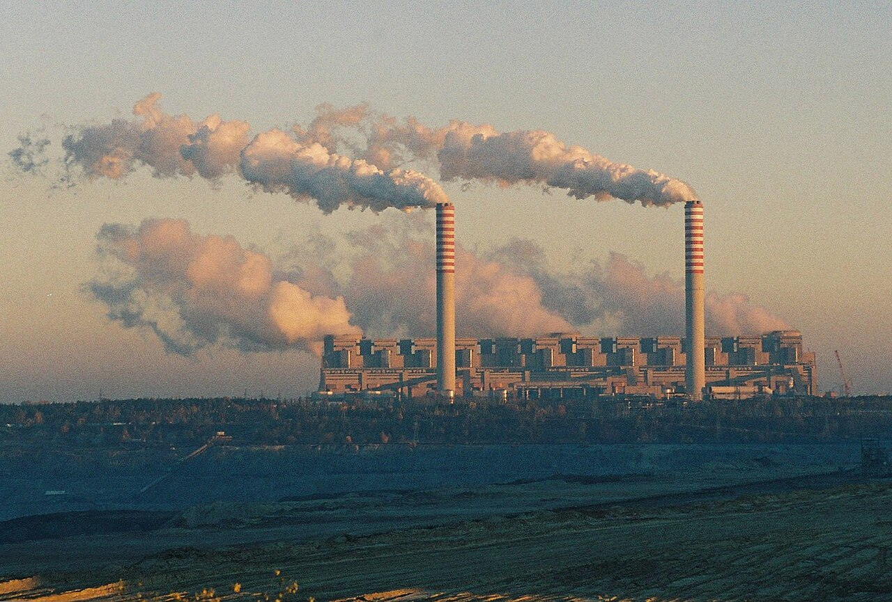
Bełchatów coal power station, Poland, one of the largest in Europe. Photo: Petr Štefek, CC BY 2.5, Wikimedia Commons.
From chimney to lake
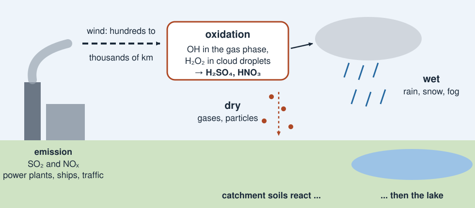
Sulfur dioxide and nitrogen oxides are emitted, transported by wind, oxidised to sulfuric and nitric acid, and then deposited in rain or directly onto surfaces. The catchment’s soils react with the acid before the water reaches the lake.
Precursors are not yet acids
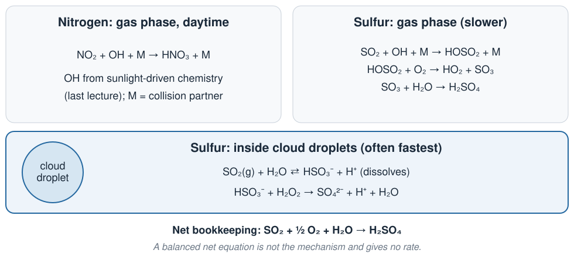
SO₂ and NO₂ must be oxidised first. NO₂ reacts with OH in daylight. SO₂ reacts more slowly with OH, but quickly inside cloud droplets with hydrogen peroxide. The net equation is bookkeeping, not the mechanism.
Clouds and fog are chemical reactors
Fog over a Swedish landscape. Photo: Robin Stumm, CC BY-SA 3.0, Wikimedia Commons.
A cloud or fog is a huge number of tiny water droplets. Each droplet:
dissolves SO₂, H₂O₂ and acids from the surrounding air;
hosts fast aqueous oxidation of SO₂ to sulfate;
forms around a particle, often itself sulfate or nitrate.
Fog and cloud water can be more acidic than rain, because the droplets are small and hold less water per unit of dissolved acid. Forests in cloudy mountains catch this water directly.
Two routes down: wet and dry
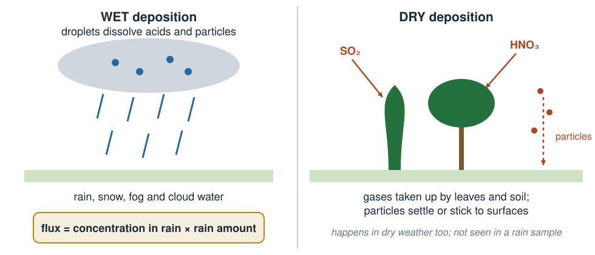
Wet deposition arrives in rain, snow, fog or cloud water. Dry deposition is the direct uptake of gases and particles by surfaces, also in dry weather. A rain sample only measures the wet part.
Measuring wet deposition
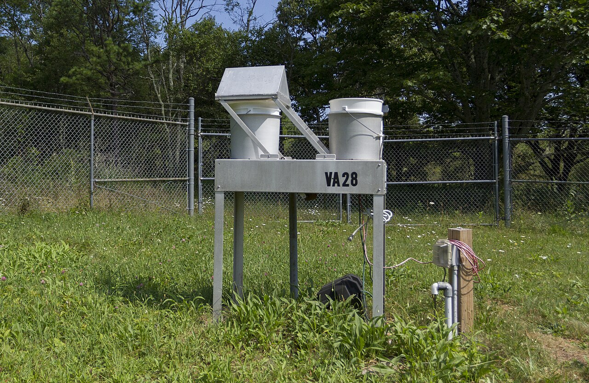
Wet deposition sampler of the US National Atmospheric Deposition Program. The lid opens only when it rains. Photo: Mary O’Neill, USGS, public domain, Wikimedia Commons.
A wet-only collector opens its lid when it senses rain, so dry dust and gases are excluded. Each sample gives a volume and concentrations of ions such as SO₄²⁻, NO₃⁻, NH₄⁺, Ca²⁺ and H⁺.
The wet flux is
F_{wet} = C_{rain} \times P
Crain in mol/L, P (rain depth) in L/m². Note that 1 mm of rain on 1 m² is 1 L.
Networks like this exist across Europe, coordinated by EMEP.
Worked example: wet nitrate flux
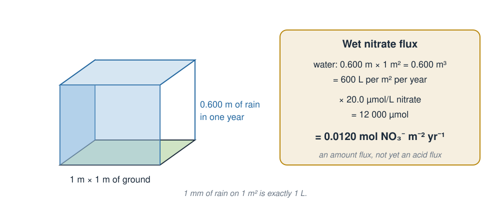
Annual rain 0.600 m with nitrate 20.0 µmol/L throughout: 600 L/m² × 20.0 µmol/L = 0.0120 mol NO₃⁻ m⁻² yr⁻¹. This is an amount flux. Calling it an acid flux needs to know what came with the nitrate.
Rain pH does not give the acid load
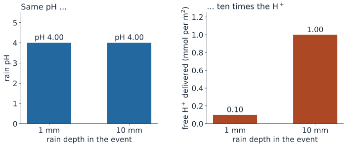
Two rain events both have pH 4.00, so [H⁺] = 10⁻⁴ mol/L.
1 mm: 1 L/m² × 10⁻⁴ mol/L = 0.100 mmol H⁺/m²
10 mm: 10 L/m² × 10⁻⁴ = 1.00 mmol H⁺/m²
Same pH, ten times the acid delivered. A concentration needs a water amount to become a load.
pH also counts only free H⁺, not acidity that appears later.
Check yourself
20 mm of rain falls with 15 µmol/L sulfate. What is the sulfate input per m²?
Rain at pH 4.5 falls in a wet year; rain at pH 4.2 falls in a dry year. Which year brought more free H⁺? What do you need to know?
Why can a rain collector not measure the SO₂ taken up directly by a spruce forest?
Is SO₂ an acid when it leaves the chimney?
Counting acid in equivalents
Acids differ in how many H⁺ each molecule can give. Count equivalents (eq): moles of H⁺ that can be neutralised.
Acid
eq per mol
HNO₃
1
H₂SO₄
2
Teaching catchment flux: 0.0200 mol HNO₃ + 0.0100 mol H₂SO₄ per m² per year
= 0.0200 × 1 + 0.0100 × 2 = 0.0400 eq m⁻² yr⁻¹
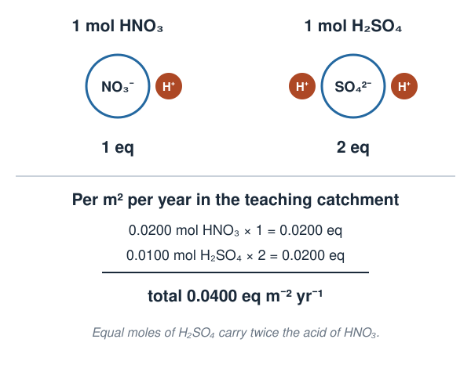
Sulfate does not identify the acid
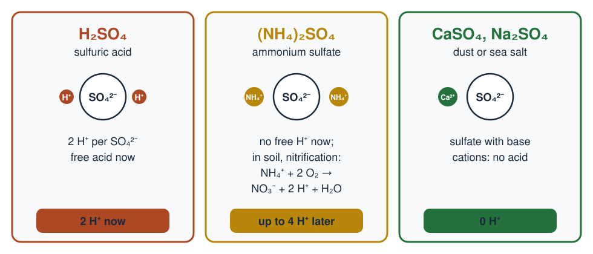
The same sulfate ion can arrive with 2 H⁺, with 2 NH₄⁺, or with base cations from dust or sea salt. Measured sulfate only fixes the anion. To find the acid, also measure H⁺, NH₄⁺ and the base cations.
Ammonia: neutraliser now, acid later
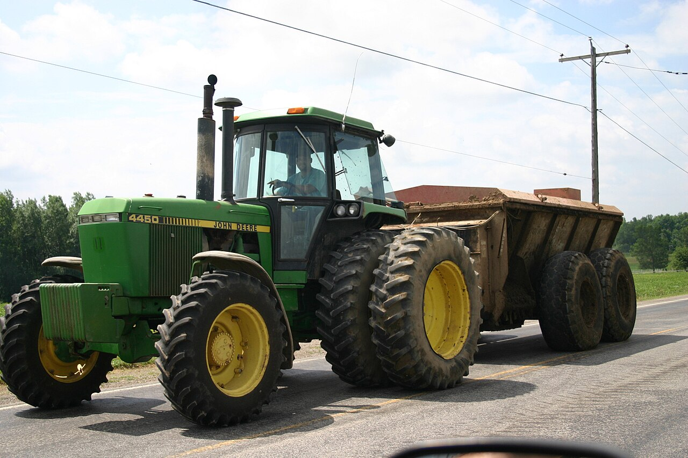
Tractor with a manure spreader, New York State, USA. Agriculture is the main source of ammonia. Photo: Pollinator, CC BY-SA 3.0, Wikimedia Commons.
Ammonia (NH₃) from manure and fertiliser is a base. In the air it neutralises acid:
\mathrm{NH_3+HNO_3\rightarrow NH_4NO_3}
So the rain becomes less acidic. But in soil, bacteria nitrify ammonium:
If catchment processes neutralise 30 000 eq/yr, the residual is 10 000 eq/yr: 10 000 / 5.00 × 10⁸ L = 0.0200 meq/L in the export. With only 20 000 eq/yr neutralised, it doubles to 0.0400 meq/L. A constructed budget, not a pH prediction.
Load and concentration are different
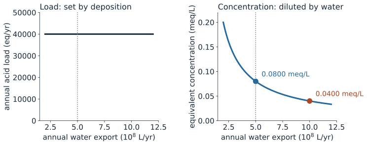
Double the water export at the same deposition: the annual acid load stays 40 000 eq/yr, but the equivalent concentration halves to 0.0400 meq/L. A wet year can lower concentrations without any change in the acid input.
Why catchments respond differently
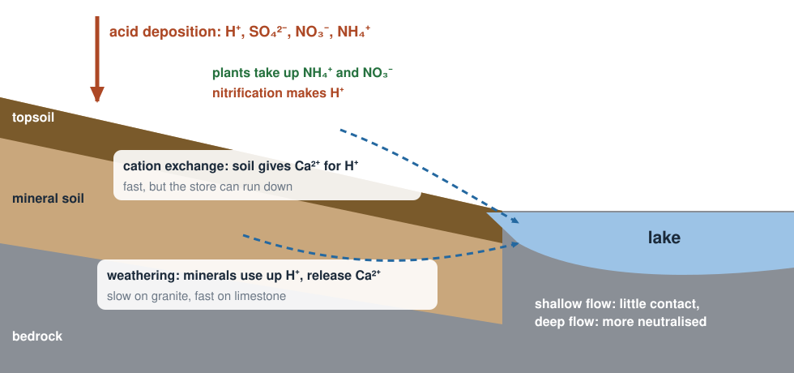
Between rain and lake, soils neutralise acid by mineral weathering and cation exchange, and plants take up nitrogen. Nitrification adds acid. Flow paths decide how much contact water has with soil.
Europe cut its emissions
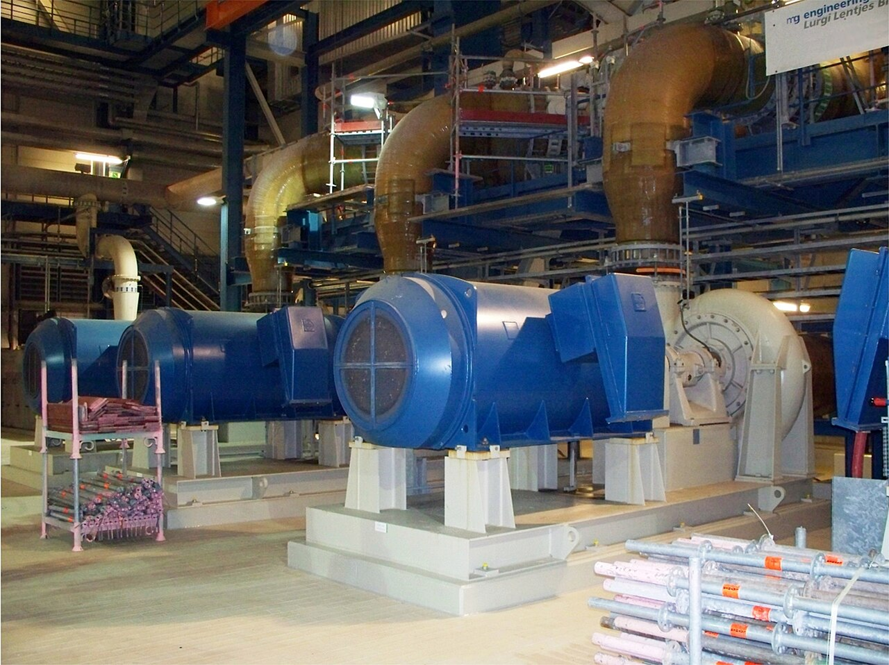
Flue-gas desulfurisation equipment inside Lippendorf power station, Germany. Photo: High Contrast, CC BY 3.0 DE, Wikimedia Commons.
After the 1979 convention and its protocols, Europe reduced SO₂ emissions by well over three quarters since the 1980s: low-sulfur fuels, fewer coal plants, and flue-gas desulfurisation, which captures SO₂ with limestone.
Sulfate deposition in Scandinavia fell accordingly. Many lakes now show rising pH and alkalinity, but recovery is slow: soils lost base cations over decades. Nitrogen and ammonia have fallen much less.
Back to the rain sample
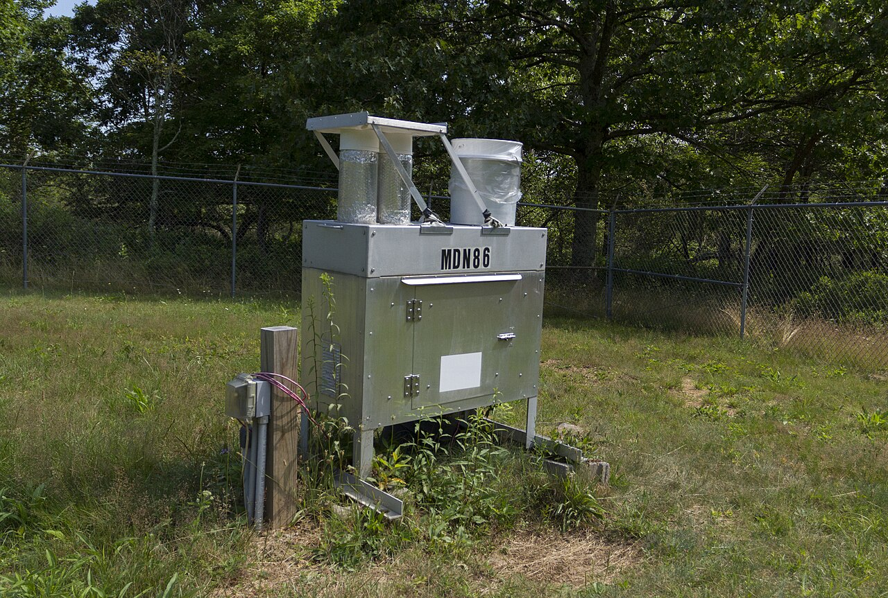
Precipitation sampler of the NADP Mercury Deposition Network. Photo: Mary O’Neill, USGS, public domain, Wikimedia Commons.
A rain sample contains sulfate. Before reporting a strong-acid dose, you need:
the acidity (H⁺) or alkalinity of the sample;
the major cations, including NH₄⁺, Ca²⁺, Na⁺, Mg²⁺;
the other anions (NO₃⁻, Cl⁻);
the precipitation volume, to turn concentration into flux;
an estimate of dry deposition;
what happens after deposition: nitrification, uptake, weathering.
Common mistakes to avoid
“Chimneys emit sulfuric acid.” They mostly emit SO₂; the acid forms by oxidation.
“Rain pH gives the acid load.” Multiply concentration by the water amount; pH misses potential acidity.
“A rain sample measures all deposition.” Dry deposition is missing.
“Every sulfate brings 2 H⁺.” Only if it arrives as H₂SO₄.
“Ammonia makes deposition harmless.” Nitrification can release 2 H⁺ per NH₄⁺ later.
“Lower concentration in a wet year means less deposition.” Water dilutes; the load may be unchanged.
“An equivalent concentration is a pH.” It needs carbonate chemistry to become one.
Explore: deposition and dilution
Double water export. Which changes: annual load or equivalent concentration?
Summit caldera of Mount Pinatubo, Philippines, on 1 August 1991, six weeks after the climactic eruption of 15 June. Photo: T. J. Casadevall, USGS, public domain, Wikimedia Commons.
 Summit caldera of Mount Pinatubo, Philippines, on 1 August 1991, six weeks after the climactic eruption of 15 June. Photo: T. J. Casadevall, USGS, public domain, Wikimedia Commons.
Summit caldera of Mount Pinatubo, Philippines, on 1 August 1991, six weeks after the climactic eruption of 15 June. Photo: T. J. Casadevall, USGS, public domain, Wikimedia Commons.